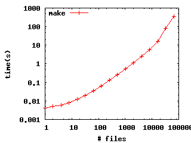
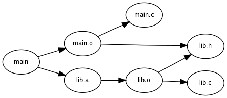
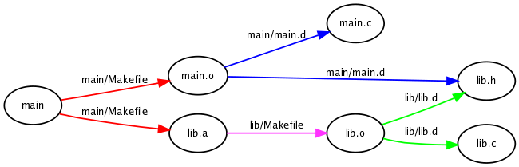
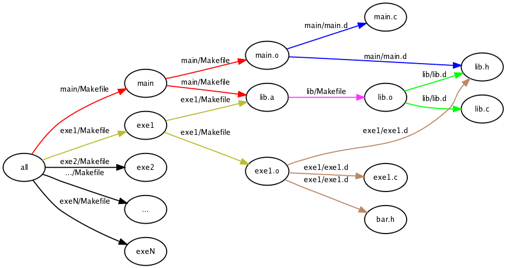
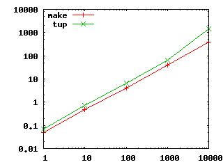
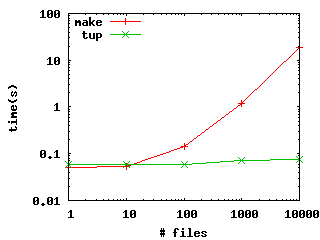

This document describes the background and implementation of a set of programs used for dependency management that function as a replacement for the ubiquitous make(1) program common on UNIX and Linux operating systems. Whereas make and its derivatives generally operate in linear time with respect to the size of the project, the proposed programs (collectively known as "tup", which is short for "The UPdater") can perform near-constant time updates after paying a cost in the initialization phase. As a secondary benefit, some enhancements to the correctness of the build in certain cases (such as deleting files) are attained as well.
For a software project, a build system generally servers two purposes. First, it allows an end-user to download the source code of the project and build it in a consistent fashion (such as making sure a library is built before a program tries to link it in). Second, the build system allows the developer to re-build parts of a project that are out of date with respect some modifications that were made to the source tree. This update operation can occur many times during development, as a developer may make frequent changes during a typical edit/compile/test cycle. In this paper, the primary focus is on this update operation. Ideally the time to perform the update operation would scale with the magnitude of the changes that are required, rather than the size of the entire source tree (which may contain files that are unrelated to the recent modifications).
The common UNIX program make is a build tool that allows a developer to specify dependencies, and commands to rebuild targets. When executed, make will perform two main functions: 1) construct a DAG (directed acyclic graph) of all dependencies, and 2) traverse the graph starting at the requested target, rebuilding only those targets that are out of date with respect to their dependencies. In this way make can be used to build an entire project from scratch, or build only the portions of the project that have been affected by changes.
Unfortunately, make does not scale well for large projects when building only the parts of the project that are affected by changes. Specifically, the update operation is at best an O(n) algorithm, where n is the number of dependencies. This is undesirable, because unrelated pieces of the project affect the build time of the part of the project we may be working on. Consider just the effect of reading an increasing number of dependency files. A Makefile that includes all of these dependency files and simply checks if the files are up-to-date (without building anything) results in the build times shown in the following table. Notice how it scales in a mostly linear fashion, until cache effects start to dominate the large number of files.
| # Files | 1 | 2 | 4 | 8 | 16 | 32 | 64 | 128 | 256 | 512 | 1024 | 2048 | 4096 | 8192 | 16384 | 32768 | 65536 |
| Time | 0.004s | 0.005s | 0.006s | 0.008s | 0.012s | 0.019s | 0.035s | 0.064s | 0.128s | 0.257s | 0.528s | 1.093s | 2.434s | 5.554s | 16.035s | 1m21.539s | 5m53.272s |
|  |
This behavior is not specific to make. There are several complaints (some legitimate, some not) with make or its Makefiles, such as the fact that: Makefiles are their own sort of language (as opposed to something already known like Perl or Python), automatic dependency handling is not builtin to the program, or it is difficult maintaining a project across multiple directories. As a result, a number of alternatives to make have been created. For example, CONS, SCONS, JAM, A-A-P, and OMake, among others. All of these programs suffer from the same linear update time. Ideally, the time to process an update would be proportional to the amount of changes required. The current linear behavior is actually a result of three separate factors:
We will now consider each of these factors in more detail. First, make always reads in the entire DAG before updating anything. Since each edge must be added to the DAG, it is easy to see that even if we ignore any other processing, constructing the DAG is at best a linear operation. As such, any build program that could hope to improve on a linear time algorithm must not rely on the entire DAG. Instead, it should construct only the portion of the graph that it needs based on the changes to the system. This is difficult because of the second and third factors mentioned above.
When performing an update, the make program essentially starts with a single target (such as 'all'), and asks the question Do I need to update this target?. This question can only be answered by checking the timestamps of each of its dependencies, and each of their dependencies, and so on through the DAG. (Other build programs may use MD5 sums or other hashes instead of timestamps, but this is irrelevant to the complexity of the algorithm). Again, this is at best a linear operation. While developing in a project, however, we don't really care if 'all' is updated or not. What we care about is that anything dependent on the immediate changes we have made (such as a .c file we modified) is updated. A better question to ask is: What files need to be updated given that these files have changed? Answering this question assumes we had a list of files that were changed up front. This is not currently provided to the build program.
Even if we had a list of files that were changed up front, any build tool is again limited to a linear-time algorithm because of the way the dependencies are structured in the filesystem. Consider the following minimal example:
Makefile
main/
main.c
Makefile
lib/
lib.c
lib.h
Makefile
Such a program may have the following dependency information:
|  |
The dependencies are actually stored in several different places. The two dependencies on the header file are output by gcc (using the -MD or similar option) the first time the program is built. This information can be used on subsequent builds to re-build both main.o and lib.o if the header changes. The edges from the .o to the .c files are generally written in the Makefiles as implicit rules (such as %.o: %.c). These dependencies are also written by gcc in the .d file. The following graph shows the same program along with where the actual edges are found:
|  |
Dependencies that are from the same file are shown in the same color. This will be explained later. For now, consider we are developing the interaction between the main program and the library. This will likely include changing the lib.h file. When this file is changed, both lib.o and main.o must be rebuilt, the archive must be re-created, and ultimately the main executable must be linked. Now let's assume that this is actually a small part of a much larger project:
|  |
Suppose we are still only developing the interaction between the main program and the library. However, now any changes we make to the library must also cause a rebuild of another (or possibly multiple) other binaries. In order to determine which pieces must be rebuilt, the build tool must read in all of the dependency files and find the dependencies on lib.h. Notice how the incident edges to the lib.h node are all separate colors. This indicates that they are all stored in separate files. So if we try to answer the basic question What files must be updated given that lib.h has changed?, the program must necessarily read in every dependency file, since we have no way of knowing which ones might contain an edge to lib.h. This means if we specify dependencies in this manner, no matter what program we use, we will be forced to use at best a linear update algorithm. The consequence of this fact is that any build program that relies on the output of gcc's dependency mechanism can perform no better than a linear-time update.
The primary feature of tup is to introduce a well-defined structure for managing dependencies. The set programs that are described here all interact with this structure, but this set is by no means exclusive; where possible, alternative methods for interacting with the dependency information will be suggested. Before describing each program's interaction with the dependency structure, we must first look at the structure itself.
All dependency information in tup is stored at the top-level of the project in a directory called ".tup". This subdirectory stores information about every file in the project, the commands used to generate other files, and the dependency relationships between them. Essentially it functions as a dependency database, and is implemented using the underlying filesystem. There are two fundamental concepts in the tup hierarchy, which are "objects" and "links". These naturally mirror the definitions of nodes and edges for a DAG. An object in tup can represent a file (such as "foo.c"), or a command (such as "tup wrap gcc -c foo.c -o foo.o" - the "tup wrap" porition will be explained later). Abstract concepts that are typically represented by PHONY targets in make could also be considered objects, though to date this has not been tried. A sub-directory in .tup/object/ is used to represent each object. Using a technique largely borrowed from git, the SHA1 hash of the filename or commandline is used as the object's unique identifier. For example, the SHA1 hash of "foo.c" is e55780e6340b6e110e51e79f077052cb086292a3. This would be represented in tup as follows:
.tup/object/e5/5780e6340b6e110e51e79f077052cb086292a3/.name
The hash is used as the directory name, and the ".name" file is used as the mapping of the object back to the actual filename. In this example, the ".name" file contains the string "foo.c". A command object is similar, though it uses a ".cmd" file instead of a ".name" file to distinguish it as an object that can be executed. This will become apparent later when the Updater is discussed.
The reason an object is stored as a directory is because any object can have multiple links (outgoing dependencies). For example, multiple C files can include the same header, or a command could create multiple output files. A link is represented by a file, which is named after the dependent object. For example, if we wish to represent the dependency "a -> b", the hash for "b" would exist in object "a"'s directory. Here is an example with two file objects (foo.c and foo.o), and one command object ("tup wrap gcc -c foo.c -o foo.o"). Note that foo.c links to the command, and the command links to foo.o:
.tup/object/91/ce14a6d690751cdccf21ddc6d19de5bf5ae15c/.cmd .tup/object/91/ce14a6d690751cdccf21ddc6d19de5bf5ae15c/b309277fe2201344a4f5289f1d5b5d6fe8c5c562 .tup/object/b3/09277fe2201344a4f5289f1d5b5d6fe8c5c562/.name .tup/object/e5/5780e6340b6e110e51e79f077052cb086292a3/.name .tup/object/e5/5780e6340b6e110e51e79f077052cb086292a3/91ce14a6d690751cdccf21ddc6d19de5bf5ae15c $ cat .tup/object/e5/5780e6340b6e110e51e79f077052cb086292a3/.name foo.c $ cat .tup/object/91/ce14a6d690751cdccf21ddc6d19de5bf5ae15c/.cmd tup wrap gcc -c foo.c -o foo.o $ cat .tup/object/b3/09277fe2201344a4f5289f1d5b5d6fe8c5c562/.name foo.o
That is the extent of the complexity of the tup object hierarchy. There are a few other directories at the top of the ".tup" directory. These are the "create", "delete", and "modify" directories, and are used as locations for tracking the modifications made to the source tree. Each directory can contain a list of object hashes for objects that were created, deleted, or modified, respectively. These will be discussed in more detail for the programs that use them.
An alternative to using the Monitor program is to make the programs used to edit source files "tup-aware". For example, the editor used to create and edit source files could write the appropriate hashes into the .tup hierarchy whenever a file is saved. Similarly, the base tools (such as "cp", "rm", etc) could be modified to do the same (or aliased to commands to perform this option). While this would also work, the Monitor was developed as a catch-all that can be used regardless of what tools modify the source tree. The downside is the user must remember to start the Monitor before changing files, otherwise notification of those changes could be lost.
create_dep "tup wrap gcc -c foo.c -o foo.o" -ifoo.c -ofoo.o
Note that headers are not explicitly mentioned here, since they are handled by the wrapper program, which is described later. This program creates the command object (given as the first argument), and stores the string in the ".cmd" file. All -i arguments are the input files, so the hash of the command object is stored in each of these object's directories. The -o arguments are output files - the hashes of all of these objects are stored in the command object's directory.
Aside from the objects explictly mentioned on the command-line, create_dep also creates an object for the directory it was executed in. A link is stored in this object to the command object that was created, so the origin of the command can be tracked. This can be used to delete files if they are no longer generated by the system.
Similar to the Monitor, an alternative to the wrapper program is to make the commands "tup-aware". This may even be required for instances where the wrapper does not adequately capture the dependencies of the command. For example, gcc could be modified to provide a "-tup" option that would cause it to generate the appropriate links in the .tup directory. The wrapper does work for at least gcc (both compiling and linking), as we as ar, so it is sufficient for the time being. I suspect javac would not work correctly with the wrapper, because it may create class files not specified on the command line.
The update phase then reads in the objects referenced by the modify and delete directories. These objects are the start nodes used for building the partial DAG. Here we can take advantage of the filesystem structure of the dependencies in the .tup directory and only read those entries needed for this particular update. This means if there is an unrelated portion of the dependency tree, the Updater does not need to read it in or parse it in any fashion. Using the example from before, suppose the hash for foo.c was in the modify directory. We could take this hash and look in the directory ".tup/object/e5/5780e6340b6e110e51e79f077052cb086292a3/" and see the hash for the gcc command. Similarly, we would then follow the hash for the gcc command to find the output file. Construction of the partial DAG continues in this manner until there are no new nodes to read in. At this point the Updater has a partial DAG in memory representing exactly the files that need to be updated, as well as the commands that need to be executed to re-construct those files. The DAG can be processed by a simple depth-first search. Whenever a file node is reached, no action is taken by the Updater. Whenever a command node is reached, that command is executed.
TODO: describe operation during Update, show full/partial DAGs
Here we compare tup against a standard set of Makefiles. The test setup generates a set of C/header file pairs (numbered 0 to n) in a random directory hierarchy that is anywhere from 0 to 7 layers deep. Each C file includes its corresponding header file, as well as the next 6 headers in numerical order (wrapping around as necessary). So, file 0.c will include 0.h, 1.h, 2.h, ... 6.h. All C files that are in the same directory are linked into an executable, and the first C file in each directory is chosen to have the main() function. The execution times, as measured by the "real" field of the "time" shell command, are tested in each of the following categories:
In order to make sure both programs were running in a fair environment, the disk was synced before running. An attempt was made to pre-load the cache in both cases by doing a 'cat' on each file before the initial build. After the initial build, the filesystem was again synced to make sure everything was written out before doing other tests. The four categories of testing were done over the following input sizes: 1, 10, 100, 1000, and 10000. For example, at size=100 there are files 0.c - 99.c, and 0.h - 99.h scattered about the hierarchy. 10000 would be about the size of a large project (such as the Linux kernel, or Firefox). The initial build time test was done only once (since it takes a while to do), and the change file/no-op tests were done 10 times each and averaged.
|  |
In all cases, tup requires about 1.4x - 3.7x the amount of time as make during the initialization phase. This is likely due to the large number of files that must be written into the .tup hierarchy as each file is compiled for the first time. It is possible there are still some inefficiencies in the implementation (since it is largely a proof-of-concept at this point), but it is unlikely that any speed improvements will result in tup outperforming make in the initialization phase. This is the up-front cost that must be paid in order to attain the benefits of tup. These benefits should be evident when analyzing the time it takes to update the source tree when a single C file is updated using the "touch" command:
|  |
To date, tup has only been tested with C programs. Although it should work as a general purpose build system for any programs that can be described as a set of inputs that go into a command to produce a set of outputs, there are likely certain cases that will be difficult.
The wrapper program writes dependencies based on the wrapped program's file access patterns. It is very simple by design, and only really works in cases where the program performs the same function everytime. The javac compiler does not necessarily perform the same function everytime. For example, suppose there are two java files: A.java and B.java, where class A uses something from class B. If neither class file exists and the command "javac A.java" is executed, *both* A.class and B.class will be written. If this command is executed again, *only* A.class will be written, since B.class already exists and is up-to-date. This behavior would likely cause the tup dependency database to be inaccurate - at best, it may cause things to be updated unnecessarily. At worst, it could introduce a circular dependency. In cases such as this, it would be beneficial to make the command itself "tup-aware" so it can write the appropriate links.
The update phase generally expects all outputs of commands to be properly listed before the command actually runs. For C programs this is simple, since there is typically only one output file. However, for Java programs there may be multiple class files generated for a single .java file. For example, if one class has several inner classes, each inner class is written to a separate .class file. It may be unreasonable to expect the user to update the configuration file every time a new inner class is added, instead favoring an automatic solution. However, if all class files are put into a .jar file at the end, it would be difficult to determine this command ahead of time since not all inputs (the .class files) are known.
Although the core of tup is likely stable, there is still a large amount of work to be done on the usability front in order to make tup user-friendly, as well as better testing for error cases and the like. It would be useful to add well-defined support for configuration options, as well as dependency support at the configuration file level (so a configuration file can properly include another, for example). Long-term it will be interesting to see if tup can be used to build an actual large-scale system, such as an entire Linux distribution.